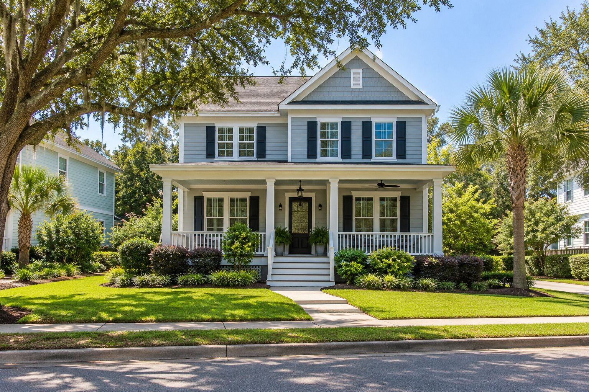
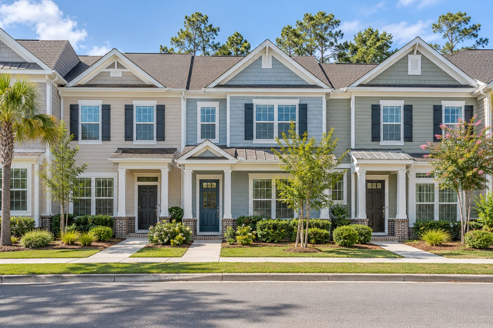
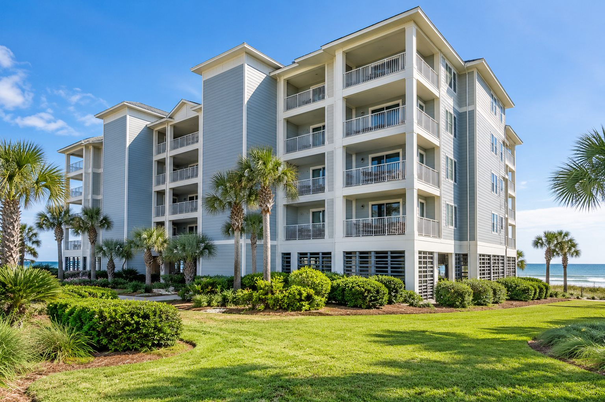
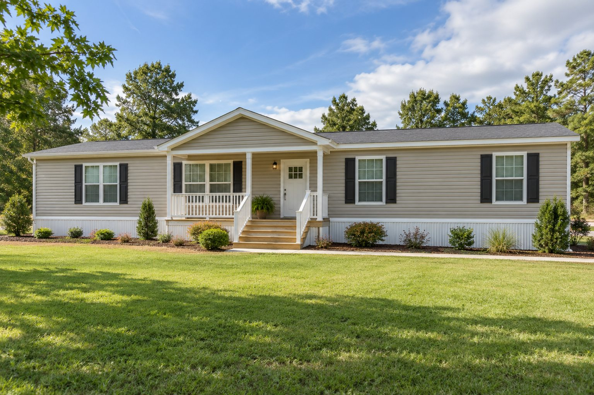

Residential Homes
A residential home inspection evaluates the home’s visible, accessible systems and components.
Exterior: Roof, siding, foundation, drainage, windows, doors, decks, and porches.
Interior: Plumbing, electrical, heating and cooling, appliances, walls, floors, ceilings, attics, and crawlspaces.
We help you understand the home’s condition and identify potential concerns before you buy.

Townhomes
A townhome inspection evaluates the home’s visible, accessible systems and components, including plumbing, electrical, heating and cooling, appliances, and interior features.
Accessible exterior components, attics, and crawlspaces are evaluated as applicable. Inspection scope may vary based on the property and HOA responsibilities.
We help you understand the home’s condition and identify potential concerns before you buy.

Condos & Condotels
A condo or condotel inspection evaluates the unit’s visible, accessible components, including plumbing, electrical, heating and cooling, appliances, windows, doors, walls, ceilings, and floors.
The scope generally focuses on the individual unit. Shared systems, common areas, and building exteriors may fall under the association’s responsibility and outside the inspection scope.
We help you understand the unit’s condition and identify potential concerns before you buy.

Manufactured Homes
A manufactured home inspection evaluates the home’s visible, accessible condition so a buyer understands safety concerns, repair needs, and maintenance issues before purchasing.
It covers the same major systems as a traditional home inspection—roof, exterior, plumbing, electrical, heating and cooling, interior, and structural components—with extra attention to how the home is supported and what’s underneath it. The inspection is visual; it does not uncover every concealed defect.
Pre-Listing Inspections
A pre-listing inspection is a home inspection the seller schedules before putting the property on the market. It helps the seller understand the home’s condition and identify concerns before a buyer’s inspection.
The inspector evaluates visible, accessible components—including the roof, structure, plumbing, electrical, heating and cooling—and provides a report explaining the findings.